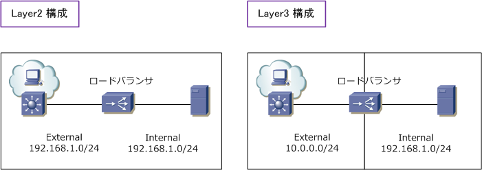
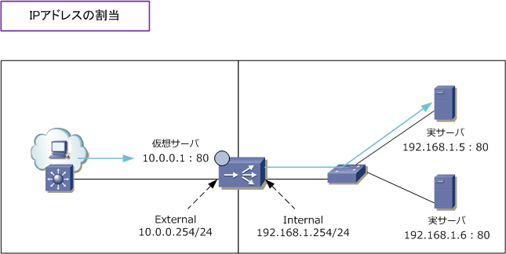
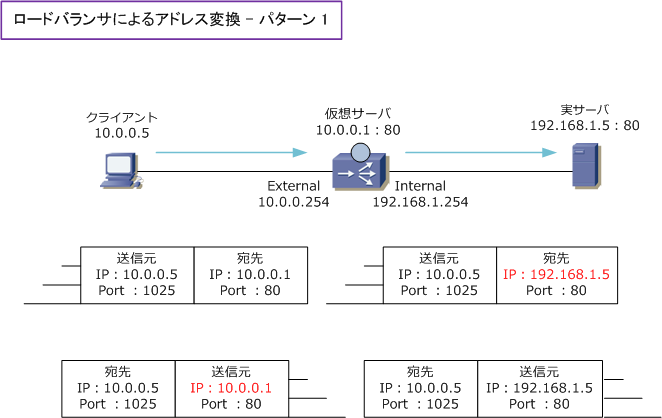
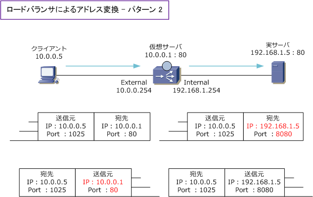
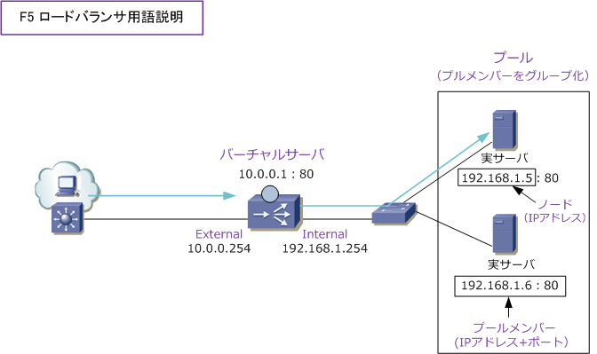

Load Balancer - Node / Pool / Virtual Server
ロードバランサ - 基本構成
ロードバランサは、Layer2またはLayer3で構成することができます。Layer2構成の場合、ロードバランサの 両側のインターフェースが同じセグメントとなり、L3構成ではロードバランサの両側のインターフェースで 異なるセグメントとなります。ロードバランサを導入する場合、特別な要件がないのならLayer3構成が推奨。

ロードバランサ - IPアドレスの割り当て
ここでは、ロードバランサのLayer3構成におけるIPアドレスの割当を説明します。ロードバランサの両側で 物理IPアドレスを割り当て、クライアントからのトラフィックを受ける事になる仮想IPアドレスを割り当てる。 この仮想IPアドレスのことをバーチャルサーバ（仮想サーバ）と言います。クライアントはバーチャルサーバ を宛先として通信を行います。一方、実サーバはロードバランサをデフォルトゲートウェイとして設定します。

上図は、Web通信を行う場合の構成です。クライアントから「https://10.0.0.1/」とアクセスしてきた場合、 ロードバランサはバーチャルサーバに関連付けたリアルサーバ（ 実サーバ ）に対してパケットを転送します。
ロードバランサ - IPアドレス変換
ロードバランサはバーチャルサーバに着信したパケットを、アドレス変換してからリアルサーバへ転送します。 このアドレス変換には、ロードバランサの物理インターフェースに割り当てられたIPアドレスは関与しません。

上図は宛先アドレス変換を示していますが、下図の通りアドレスだけでなく同時にポート番号の変換も可能。

ロードバランサ - 用語説明
以下はF5社のロードバランサであるBIG-IPで定義されている用語説明です。メーカによって定義している 用語は異なりますがロードバランサ業界の標準用語として使われることが多く知っておくと非常に便利です。

※ プールメンバーのポート番号は、バーチャルサーバのポート番号と一致させる必要はりません。※ 一般的には一致させます。
| 用語 | 説明 |
|---|---|
| Node ( ノード ) | 負荷分散対象となる実サーバのIPアドレス |
| Pool Member ( プールメンバー ) | 負荷分散対象となる実サーバのIPアドレスに使用するサービスポートを追加したもの |
| Pool ( プール ) | プールメンバーをグループ化したもの |
| Virtual Server ( バーチャルサーバ ) | クライアントからトラフィックを受けるIPアドレスとポート番号を定義したもの。 |
| Internal ( インターナル ) | 一般的にサーバ側セグメントに割り当られるロードバランサのインターフェース名 |
| External ( エクスターナル ) | 一般的にクライアント側セグメントに割り当られるロードバランサのインターフェース名 |